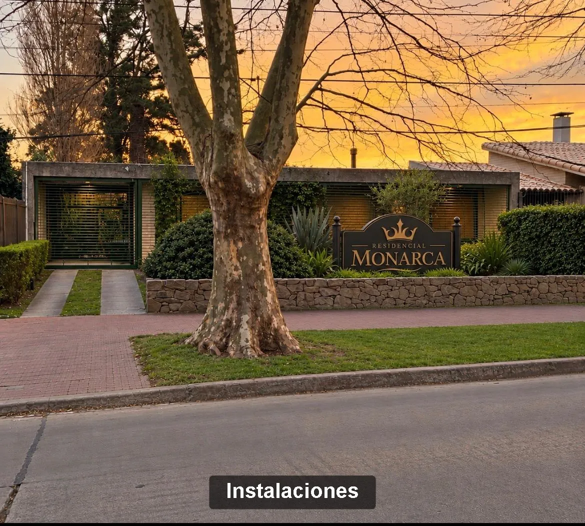
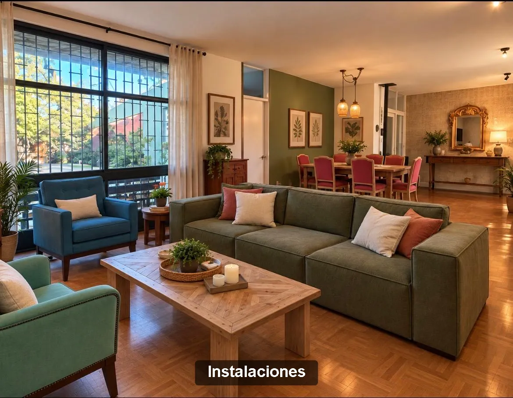
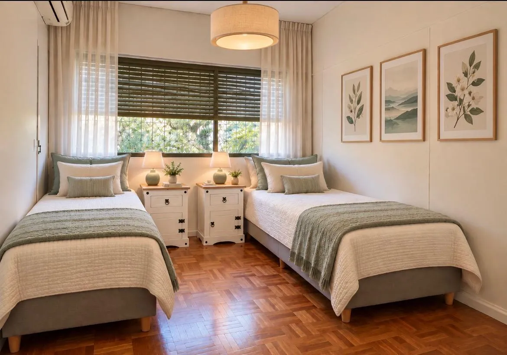
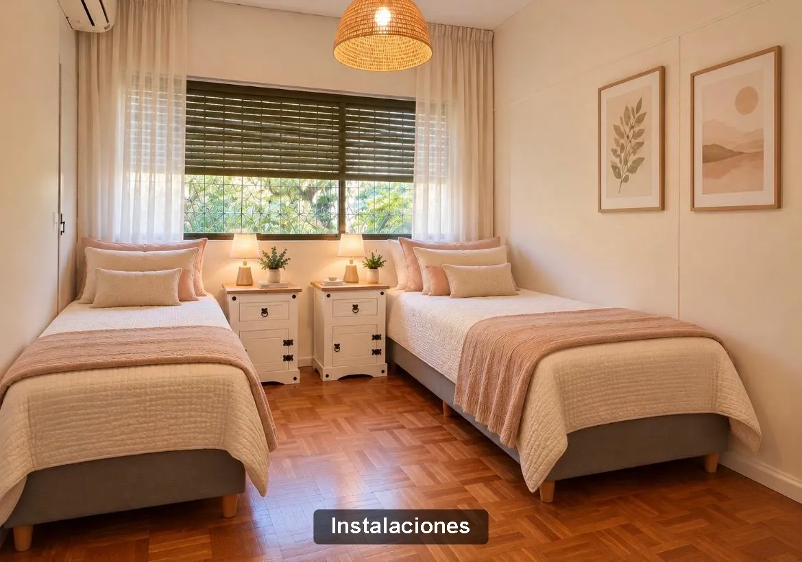
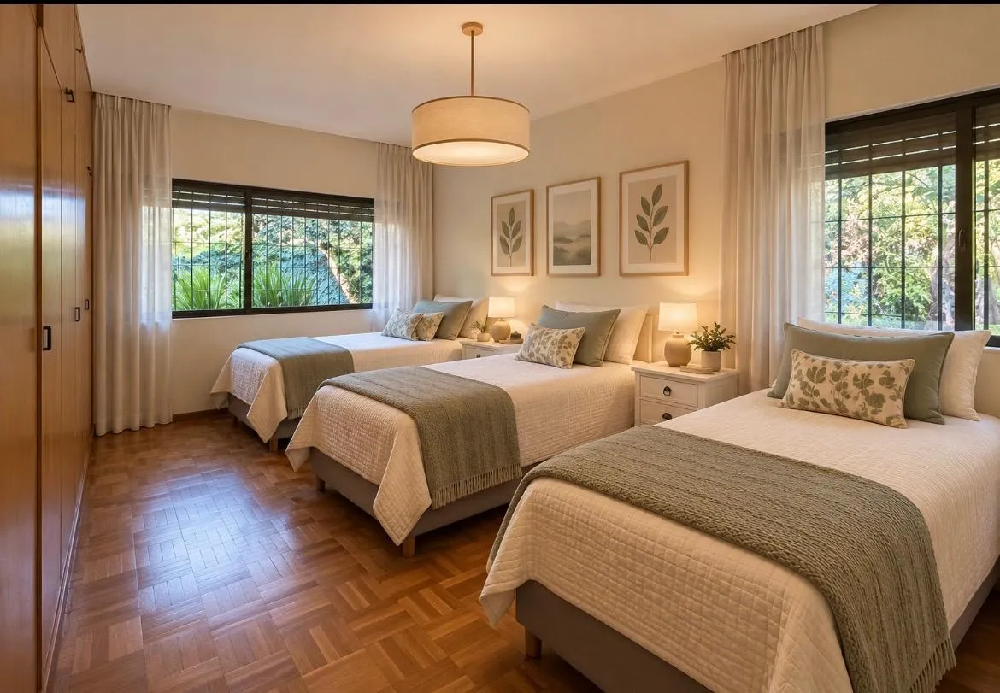

Brindamos un espacio seguro, cálido y profesional pensado para el bienestar integral.
Contactate con nosotrosJavier Bia
Lic. en EnfermeríaEn Residencial Monarca brindamos un hogar cálido, seguro y acogedor, donde cada persona sea cuidada con respeto, empatía y dedicación. Contamos con un equipo capacitado y una atención cercana, orientada a promover la autonomía, el bienestar y la calidad de vida de cada residente. Queremos que quienes viven en Monarca se sientan acompañados, valorados y, sobre todo, como en casa.
Ser un residencial reconocido por la calidad humana de su atención, la confianza de las familias y el compromiso con el bienestar integral de sus residentes. Aspiramos a construir un lugar donde envejecer sea una etapa vivida con dignidad, tranquilidad, afecto y respeto.
Cuidamos desde la cercanía, el afecto y la escucha. Buscamos que cada residente se sienta acompañado, querido y contenido.
Reconocemos la historia, las preferencias, las costumbres y la individualidad de cada residente, promoviendo un trato digno.
Trabajamos para ofrecer un entorno seguro, tranquilo y cuidado, generando confianza tanto en residentes como en sus familias.
Contamos con un equipo de profesionales capacitados y comprometidos para brindar una atención responsable, cercana y de calidad.
Promovemos una vida activa y confortable, respetando las posibilidades, necesidades y preferencias de cada residente.
Monarca busca mucho más que un lugar donde vivir: queremos construir un hogar donde compartir y pertenecer.
Un espacio pensado para sentirse como en casa. En Residencial Monarca cuidamos cada detalle para ofrecer un entorno cálido, confortable y seguro.
En Residencial Monarca ofrecemos una alimentación variada y equilibrada, contemplando las necesidades de cada residente.
En Residencial Monarca promovemos espacios de encuentro, movimiento y creatividad, adaptados a las posibilidades e intereses de cada residente.
En Residencial Monarca contamos con un equipo de profesionales de la salud comprometido con el cuidado y bienestar de cada residente.





Momentos y actividades en Residencial Monarca
¿Querés coordinar una visita o tenés alguna consulta? Estamos para escucharte y asesorarte de forma personalizada.
DIRECCIÓN: Rivera 5734 esquina Vicente Rocafuerte